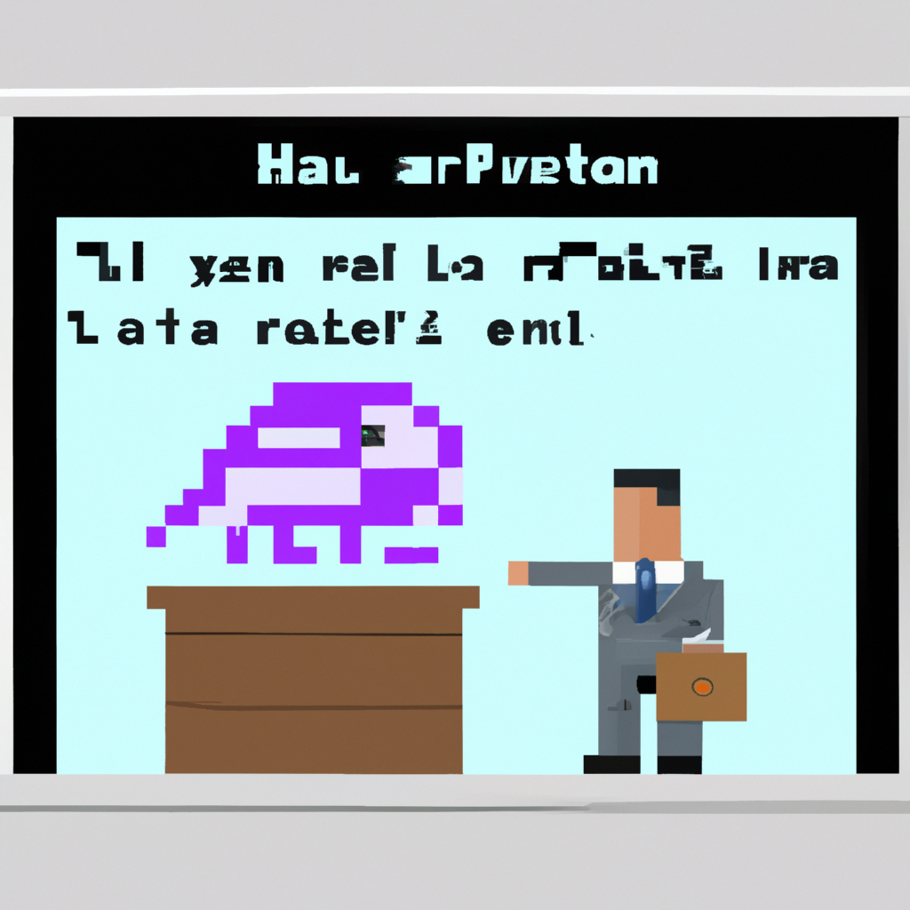

Why AI will never replace the radiologist
Recently, there has been a lot of talk about artificial intelligence (AI) and machine learning replacing radiologists. While it is true that AI and machine learning can be used to process radiology images and provide diagnostic information, I don't think that AI and machine learning will ever replace the radiologist.
Radiology is a complex field and requires a deep understanding of anatomy and physiology. Machines simply cannot replicate the knowledge and expertise that radiologists possess. Radiologists have a unique understanding of the imaging process, and their expertise and experience cannot be replaced by a machine.
AI and machine learning can be used to assist radiologists in making more accurate diagnoses, but they cannot replace them. The use of AI and machine learning can help radiologists to be more efficient and accurate, but they cannot replace the radiologist.
In addition, radiologists have a unique ability to assess and interpret the images they are looking at. AI and machine learning can be used to identify certain features in an image, but they cannot make an informed judgment about the image. This is where the expertise of a radiologist comes into play.
Finally, radiologists are responsible for the safety and well-being of their patients. AI and machine learning can be used to identify potential risks and alert the radiologist, but the radiologist needs to be able to make a judgment about the best course of action for the patient. AI and machine learning cannot replace the radiologist in this regard.
In conclusion, I believe that AI and machine learning will never replace the radiologist. AI and machine learning can be used to assist radiologists in making more accurate diagnoses, but they cannot replace the radiologist. Radiology is a complex field that requires a deep understanding of anatomy and physiology, something that machines cannot replicate. Radiologists have a unique understanding of the imaging process, and their expertise and experience cannot be replaced by a machine.